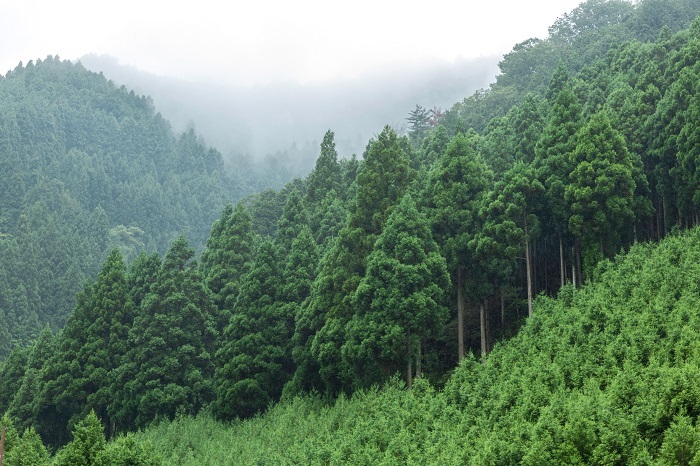

岩手と言えば三大麺！おいしさはもちろん、特別な体験もできる。そんな岩手の食文化を紹介します。
岩手には数多くの名所や素晴らしいスポットが多くあります。その中で私が特に紹介したい岩手の名所を紹介していきます。
岩手にはたくさんの偉人や有名人がいます。その中で今絶賛活躍中の岩手出身有名人を3人写真付きで紹介します。
岩手は林業が盛んで林業に関する学校や岩手の木が有名なところにも使われています。岩手で生えている木やどこで岩手の木が活躍しているのか説明します。